Product directory
Find your fire protection product.
Browse product details, filter by category, or search by name, model, nominal size or connection.
Search includes models and sizes listed on product pages. Check the model table for your required configuration; photos show the labeled sample.
Fire Sprinklers


Concealed Sprinklers — Standard / Quick Response, K80 / K115
Additional models and specifications

Large K-Factor & ESFR Sprinklers — ESFR Pendent Series
Additional models and specifications


Water Mist Nozzles — Standard Type with Inlet Strainer
Additional models and specifications


Water Curtain Nozzles — Horizontal Single-Slot Type
Additional models and specifications


Foam-Water Nozzles
Alarm & System Valves


Fire Butterfly Valves
Fire Gate Valves
Fire Hose Reels
Fire Hose Nozzles, Couplings & Adapters
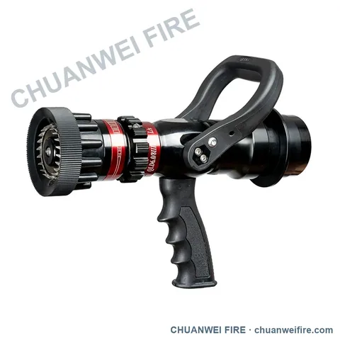
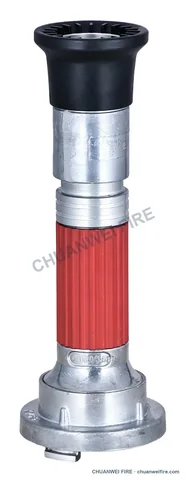
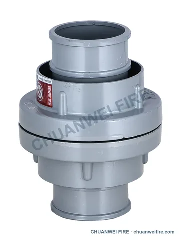
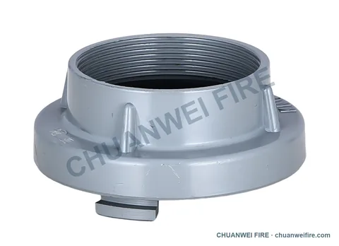

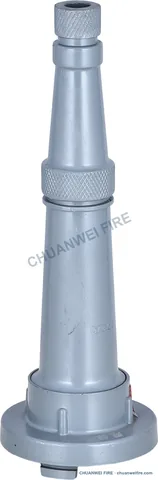
Straight-Stream Fire Hose Nozzles — QZ configuration
Additional models and specifications

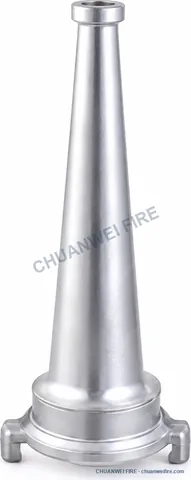

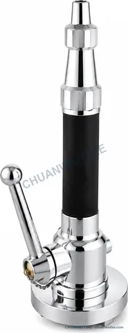
Lever-Operated Fire Hose Nozzles — Configuration A
Additional models and specifications

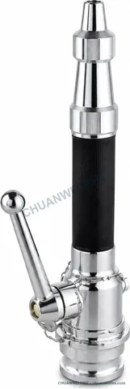
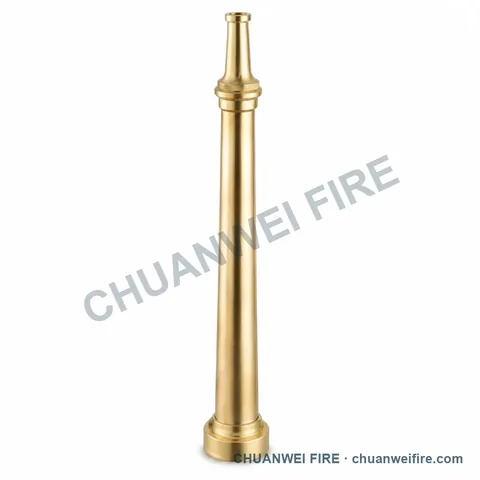
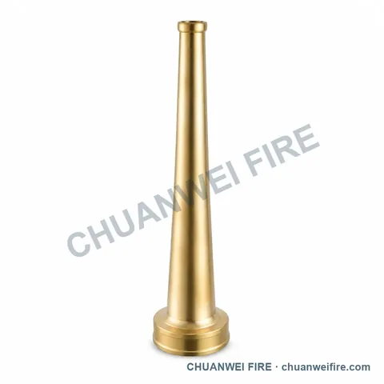
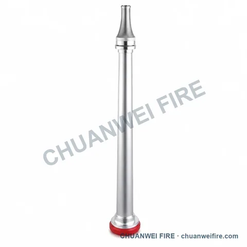
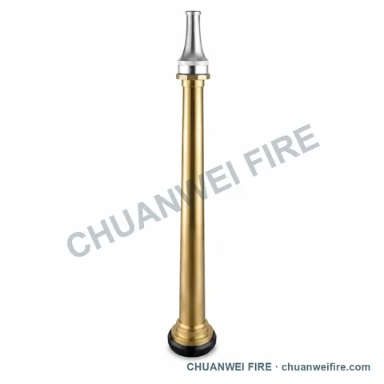
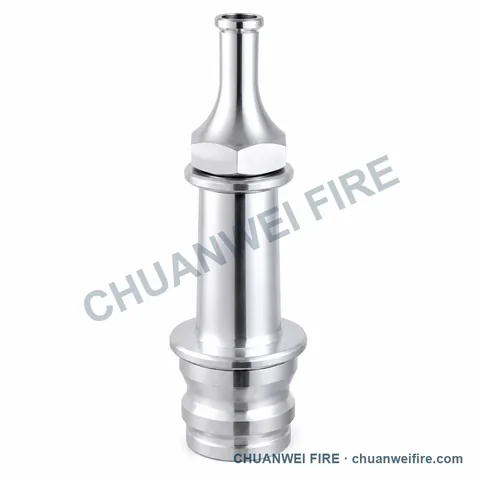
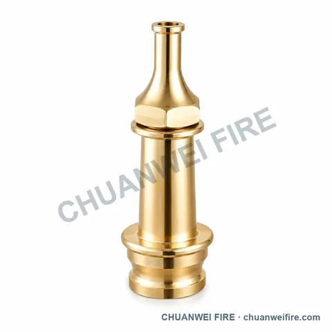
Lever-Operated Spray Fire Hose Nozzle — NP-034 / NP-035
Additional models and specifications
NH Fire Hose Coupling — UHC-010 / UHC-011 / UHC-012
Additional models and specifications
Double-Lug Fire Hose Adapter — UHC-015 / UHC-016
Additional models and specifications
Indoor Fire Hydrants


Horizontal-Handwheel Fire Hose Valve — GV-011 / GV-012
Additional models and specifications
Outdoor Fire Hydrants
Fire Department Connections
Twin-Connection Flanged-Base Fire Department Connection — UF-020 / UF-022
Additional models and specifications
Fire Equipment Cabinets
Fire Extinguishers
Automatic Fire Suppression
Fire Alarm Equipment
Fire Pumps & Control Cabinets
Pipeline Valves & Strainers
Grooved Pipe Fittings
Accessories
No products found. Try a model, size or another product name, or clear the filters. Send your product requirement →
Product selection
Details that help us prepare your quotation
Start with your name or company and the product you need. Add the details below when available. For market-specific connections, a drawing or mating sample helps us check compatibility.
- Nominal size and connection
- Working pressure and medium
- Quantity and destination
- Drawing, sample or required standard
Send your product requirement
Tell us your name or company and the product you need. You can add the model, size, quantity and destination later.
Review and send the draft in WhatsApp or your email app. You can attach photos and drawings there. If the app does not open, use our contact page. Contact details →